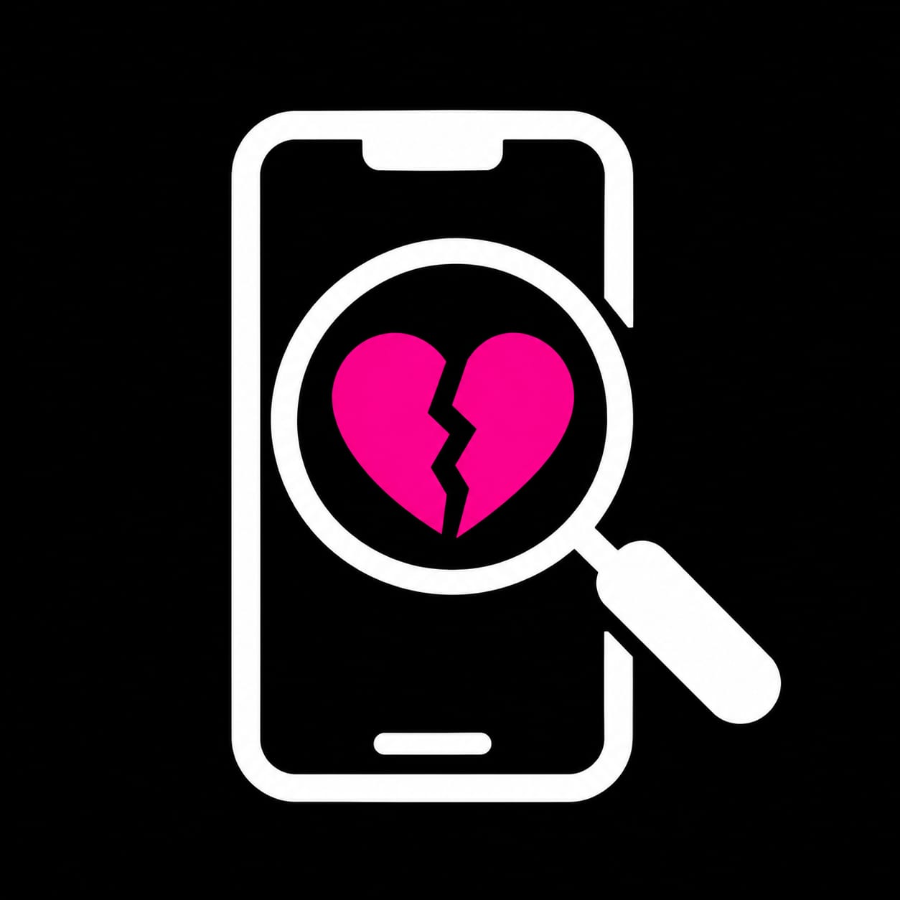

EXPEDIENTE 01
El ticket de las 23:15
Una cena cancelada, una mentira y una prueba que parece imposible de explicar.
MISTERIO INTERACTIVO · CASO 01

Nada es lo que parece. Todo deja una pista.
EXPEDIENTE 01
Una cena cancelada, una mentira y una prueba que parece imposible de explicar.
Caso y personajes ficticios. Investigá hechos, no suposiciones.